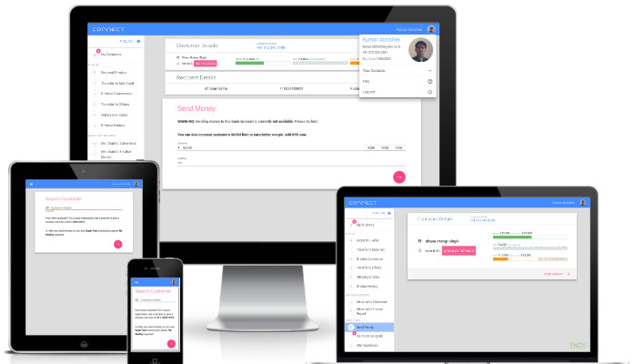
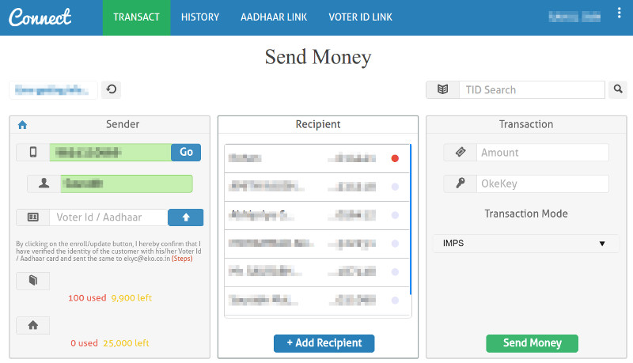

Tag: architecture

This is a
series ofposts about my adventure with an exciting project at Eko: connect.eko.in, the progressive web app enabling Eko‘s merchants to make payments and other financial transactions.
About eight years ago, Eko introduced the simplest of all interfaces to bring banking, payments and other financial transactions to the masses: by dialing numbers on a basic mobile phone. But as the smartphones and laptops grew in popularity with our merchants, we introduced other smart applications. One of them was a simple web portal for money remittance called “Connect”:

The website was immediately successful with our partner merchants, thanks mostly to its simple three-pane interface for transferring money to any bank account in India.
In the three years of it’s existence, the old Connect portal had already been used to transact for more than 6 billion dollars.
But soon, money remittance service was not enough. We wanted to introduce more services. The only problem was that our engineers had to individually design and build interfaces for these new services. And we realized…
And, as a solution, us lazy folks at Eko came up again with our common mantra:
generalize and automate!
So, we came up with the following solution: